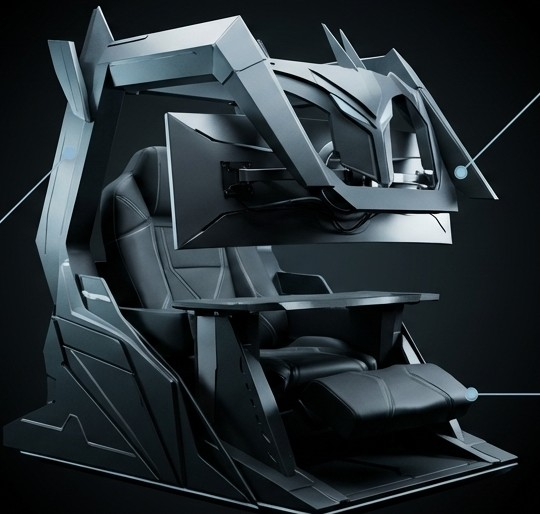
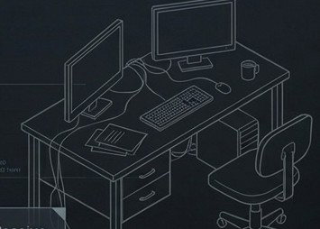
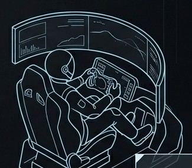
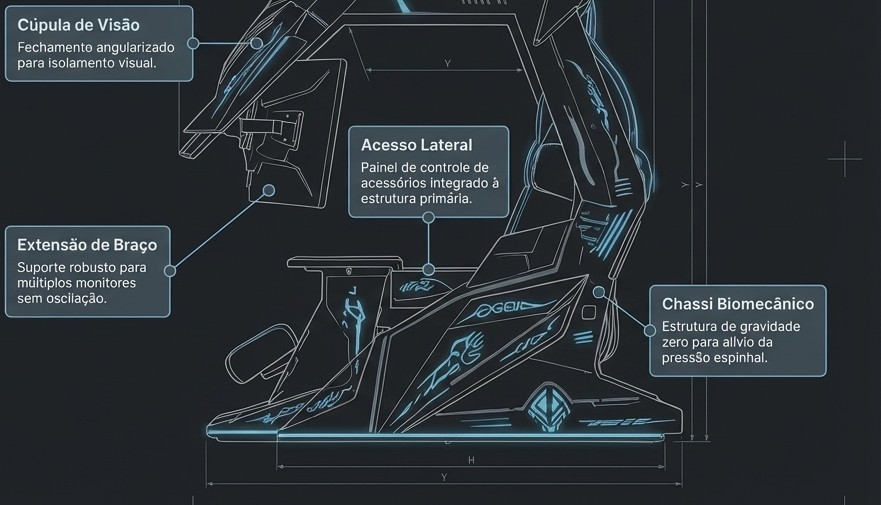
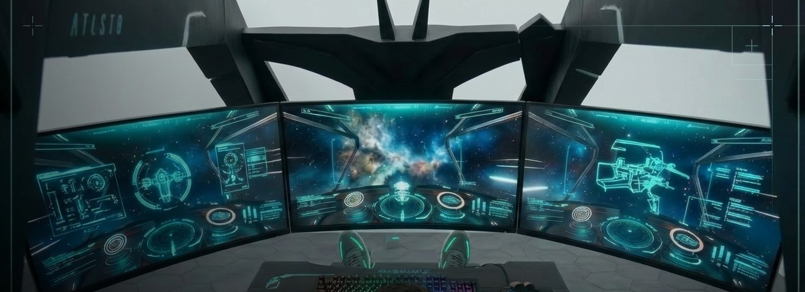
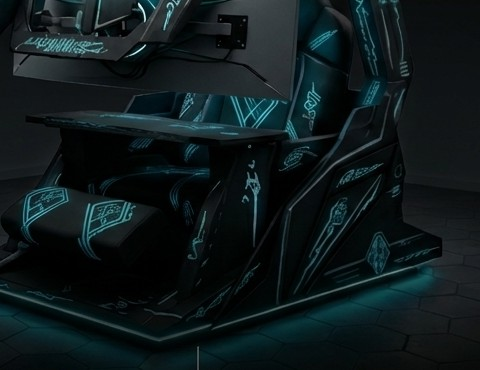

O primeiro cockpit biomecânico imersivo de alta performance.

A performance digital atingiu o limite do corpo físico.
A ergonomia tradicional falha em sessões prolongadas de alto rendimento.
O ambiente externo quebra o foco constante exigido por profissionais e atletas digitais.
Equipamentos desconexos geram setups caóticos e gestão de cabos ineficiente.
Não precisamos de cadeiras melhores. Precisamos de um ecossistema integrado — a evolução do mobiliário analógico para o controle biomecânico total.


Uma peça central que assume o espaço com presença, não só função.
Cúpula de visão fechada que isola o campo de visão do ambiente externo.
Sustentação biomecânica pensada para sessões longas sem fadiga.
Engenharia de precisão focada no usuário. Cada ângulo é calculado para conforto extremo e foco inabalável.


O mundo exterior desaparece. O foco absoluto permanece.
| Cadeiras Premium | Setups Customizados | ATLAS Cockpit | |
|---|---|---|---|
| Ergonomia integrada | ✕ | ✓ | ✓ |
| Imersão visual 180° | ✕ | ✕ | ✓ |
| Cabeamento invisível | ✕ | ✕ | ✓ |
| Status aspiracional | ✓ | ✓ | ✓ |
ATLAS não compete com móveis; ele cria e domina a categoria de cockpits biomecânicos.
Posicionamento estratégico na interseção entre tecnologia de elite e design de luxo.
Gaming global + workstations corporativas.
Segmento premium de alta renda, disposto a investir em setups de ponta.
Early adopters: streamers, executivos C-level, profissionais de elite, pilotos de simulação.
Preço premium. Margens extraordinárias. Modelo de vendas high-ticket direto ao consumidor.
Takeaway: a altíssima rentabilidade por unidade reduz drasticamente a dependência de grandes volumes iniciais para sustentabilidade financeira.
Escalabilidade comprovada e projeção de adoção acelerada no mercado global.
Modelo de negócios validado para retorno hiper-acelerado, sustentado por alto ticket e baixa necessidade de volume inicial.
Penetração cirúrgica através de líderes de opinião e ecossistemas digitais premium.
Product seeding com criadores de conteúdo de alto impacto.
A audiência visualiza o setup definitivo, gerando demanda reprimida.
Aquisição B2C de high-net-worth individuals e early adopters.
Expansão para equipes de esports, estúdios de produção e escritórios de elite.
ATLAS não é apenas um produto físico; é a plataforma fundacional de uma nova categoria.
Dominância do segmento premium (atual).
Nova categoria de cockpits modulares — expansão de acessórios e upgrades.
Integração nativa com VR/AR — a ponte definitiva para a imersão espacial.
Buscamos capital inteligente para acelerar o domínio global desta nova categoria.
Otimização da cadeia de suprimentos e redução drástica do tempo de montagem.
Estruturação logística de ponta para atendimento ágil de mercados internacionais chaves.
Marketing agressivo voltado ao Efeito Halo através de patrocínios e parcerias em ecossistemas premium.

ATLAS. Onde a máquina termina e a performance começa.
Interessado em conhecer o ATLAS de perto, revender, investir ou fechar uma parceria? Deixe seus dados.
* Formulário via mailto — edite contato@SEU-DOMINIO.com pelo
seu e-mail real, ou substitua por um endpoint (Formspree, Google Forms
etc.) se preferir não expor seu e-mail diretamente no código.